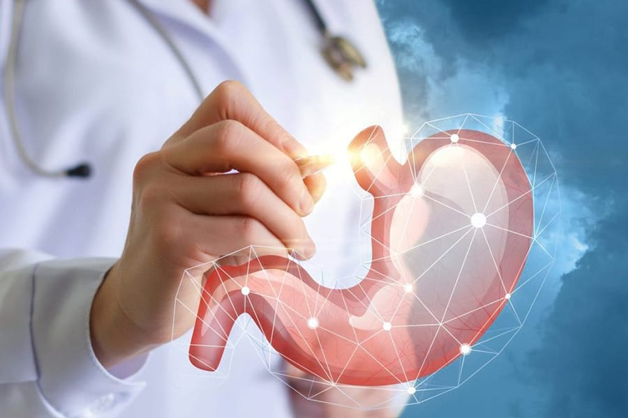
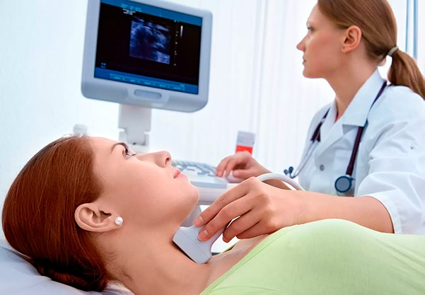
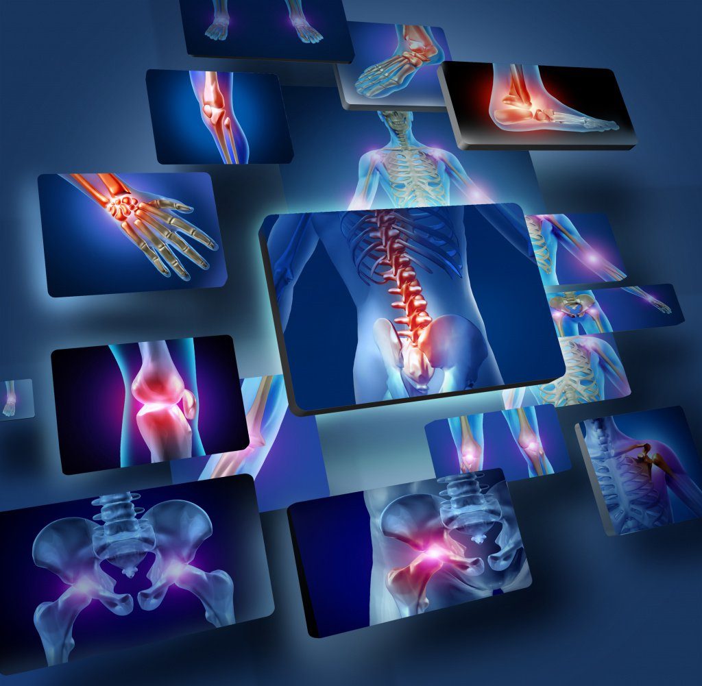

ТЕРАПІЯ
- Терапевт
- це спеціаліст широкого профілю, який здійснює первинний огляд пацієнта при симптомах, що не передбачають хірургічного втручання. Він спрямовує хворого на додаткові лабораторні та інструментальні обстеження, а за необхідності – до вузькопрофільних спеціалістів для подальшого лікування. Цей спеціаліст займається лікуванням та профілактикою захворювань нижніх та верхніх дихальних шляхів, ГРВІ, системних захворювань та інших патологій внутрішніх органів та систем.

- Гастроентерологія
- це розділ медицини, який займається діагностикою, лікуванням та профілактикою захворювань шлунково-кишкового тракту.Останнім часом помітно зросла кількість пацієнтів з патологією травної системи. Причиною тут може бути неправильне харчування, переїдання, стресові ситуації, постійний поспіх тощо. В результаті порушується метаболізм, погіршується стан шкіри, волосся, нігтів, з'являється неприємний запах з рота, слабшає імунна система. Помітивши такі проблеми, ти можете отримати у нашій клініці консультацію гастроентеролога, пройти необхідні лабораторні дослідження. А для того, щоб лікування було стовідсотково своєчасним та найбільш якісним, необхідно проходити планові обстеження, які дозволять виявити хворобу на ранніх етапах. Саме у клініці «Medlife Hospital» ти зможеш пройти комплексну діагностику ШКТ та отримати ефективну допомогу.

- Ендокринологія
- це галузь практичної медицини, у якій займаються діагностикою та лікуванням захворювань залоз внутрішньої секреції.Симптоматика таких захворювань дуже велика. Самостійно діагностувати у себе ендокринологічне захворювання практично неможливо. Тому на прийом до ендокринолога, як правило, потрапляють за направленням від терапевта чи іншого фахівця. Однак існують характерні ознаки, які можуть свідчити про порушення концентрації того чи іншого гормону, що їх продукують ендокринні залози.
ХІРУРГІЯ
- Урологія
- це галузь медицини, що вивчає захворювання та методи лікування сечовидільної системи людини. Вона є підрозділом хірургії.У своїй роботі лікарі-урологи Медичного центру «Medlife Hospital» використовують такі сучасні методи діагностики як ультразвукове сканування (ехографія), інструментальні, ендоскопічні та радіонуклідні методи дослідження, фотоцистоскопія.Урологія займається переважно хірургічним лікуванням хвороб сечовидільної системи, в тім числі із застосуванням сучасних малоінвазивних методів.
- Гінеколог
- Команда гінекологів професіоналів з багаторічним досвідом.Всі лікарі мають вищу категорію. Серед них, також, є члени Всеукраїнської організації акушерів-гінекологів, аспіранти кафедри акушерства, гінекології і репродуктологіі НМАПО ім.П.Л.Шупика, кандидати медичних наук за спеціальністю «Акушерство та гінекологія», практикуючі лікарі, які проводять різні види оперативних гінекологічних втручань.

- Травматолог
- Рани, різні травми, вивихи, розтягнення і переломи - ось неповний список того, чим займається ортопед-травматолог. У нашому відділенні травматології проводиться лікування різноманітних захворювань, зокрема артрозів, артритів, епікондиліта, бурситів, плоскостопості.
- Консультація досвідченого лікаря є обов'язковою в таких випадках:
- травма призвела до деформації кінцівки, з'являється хрускіт, якщо промацувати шию або кінцівку, ви відчуваєте біль у суглобах, м'язах або кістках, після защемлення нерва, травми або падіння шкірний покрив червоніє або набрякає, рухливість суглоба значно знизилася, кінцівки або стопи набрякають, рухи скуті, особливо після тривалого відпочинку, сну.